Kostenloses Material Deutsch

Artikel im Rucksack: der, die, das mit Farbcode – Bastel-Rucksack, 24 Schulsachen, Hörübungen (DaZ, Klasse 1)
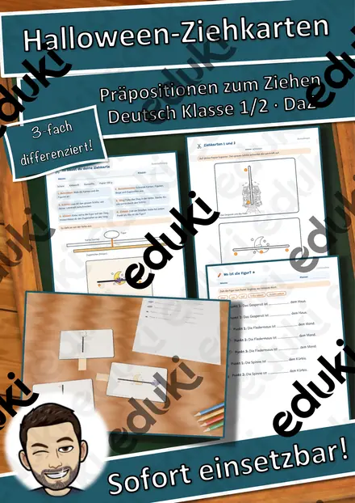
Halloween-Ziehkarten – Präpositionen sichtbar machen: über, vor, neben, auf, 3-fach differenziert (Klasse 1/2, DaZ)
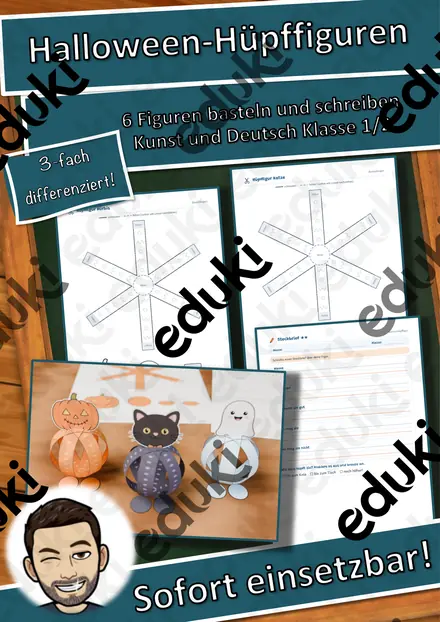
Halloween-Hüpffiguren – 6 Bastelvorlagen mit Federkugel, Steckbrief und Geschichte, 3-fach differenziert (Klasse 1/2)

Halloween Taschenlampen-Rätsel „Was steckt im Glas?“ – Sätze mit ein/eine schreiben, 3-fach differenziert (Klasse 1/2)
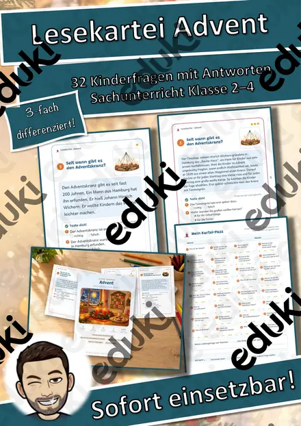
Lesekartei Advent – 32 Kinderfragen mit Antworten in 3 Stufen (Klasse 2–4)

Lesekartei St. Martin – 32 Kinderfragen mit Antworten in 3 Stufen (Klasse 2–4)

Herbstkranz mit Elfchen – Fensterbild gestalten und Herbstgedicht schreiben, 3-fach differenziert (Klasse 2/3)
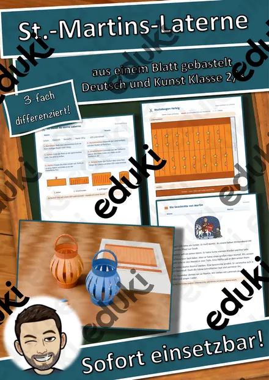
St.-Martins-Laterne aus einem Blatt – falten, einschneiden, rollen, mit Martinsgeschichte, 3-fach differenziert (Klasse 2/3)
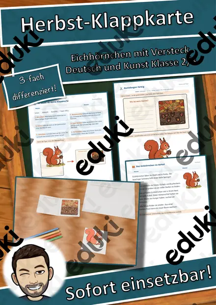
Herbst-Klappkarte Eichhörnchen – Figurenkarte basteln mit Sachtext, 3-fach differenziert (Tiere im Herbst, Klasse 2/3)
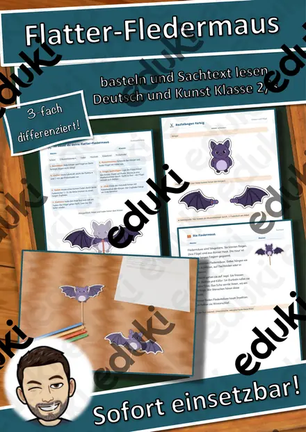
Flatter-Fledermaus am Stab – bewegliche Bastelfigur mit Sachtext, 3-fach differenziert (Halloween/Herbst, Klasse 2/3)
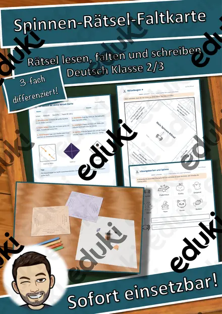
Spinnen-Rätsel-Faltkarte – Halloween-Rätsel lesen und schreiben, Pop-up-Spinne, 3-fach differenziert (Klasse 2/3)
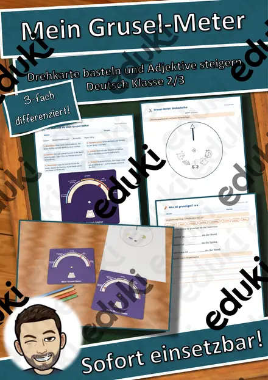
Mein Grusel-Meter – Halloween-Drehkarte basteln, Adjektive steigern und vergleichen, 3-fach differenziert (Klasse 2/3)
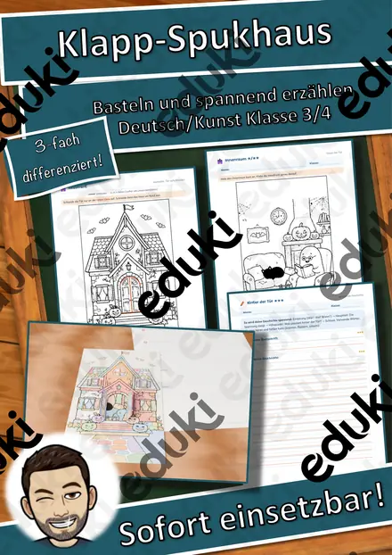
Klapp-Spukhaus zu Halloween – Bastelvorlage mit Schreibanlass und Wortspeicher, 3-fach differenziert (Klasse 3/4)
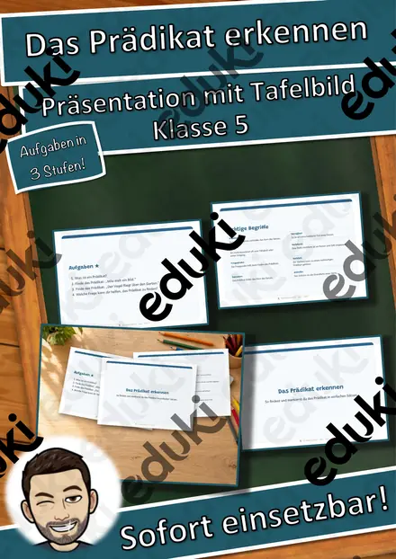
Das Prädikat erkennen – Präsentation mit Tafelbild (Klasse 5)
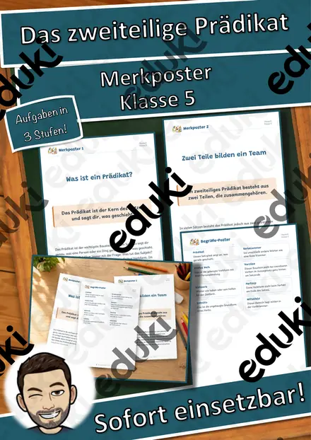
Das zweiteilige Prädikat – Merkposter (Klasse 5)
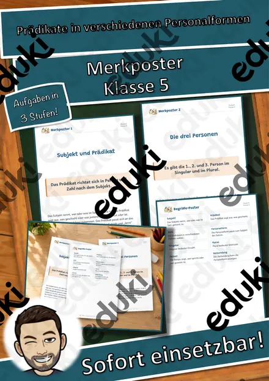
Prädikate in verschiedenen Personalformen – Merkposter (Klasse 5)

Waldbrände in Kalifornien - Aktuelle Ereignisse

Suchsel zum Ukrainekonflikt - Krieg in der Ukraine - differenziert (Buchstabengitter)

Quiz: Verständnis von Rassismus

Halloween - Hörverstehen

Hitler war kein Kommunist - Aktuelle Ereignisse #demokratiestärken
Kostenloses Material Kunst
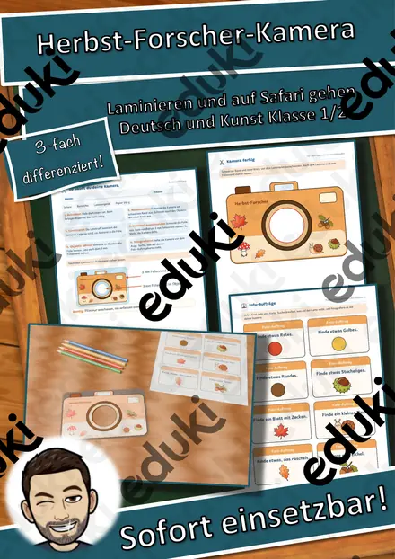
Herbst-Forscher-Kamera – Papier-Kamera zum Laminieren mit Foto-Aufträgen und Fotoalbum, 3-fach differenziert (Klasse 1/2)

Igel im Laubnest – Klappnest basteln mit Sachtext Winterschlaf, 3-fach differenziert (Tiere im Herbst, Klasse 1/2)

Der Kürbis von innen – Klapp-Kürbis basteln und beschriften, 3-fach differenziert (Halloween/Herbst, Klasse 1/2)
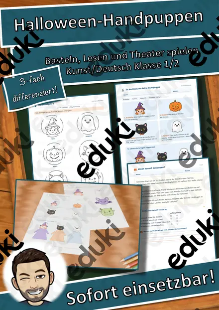
Halloween-Handpuppen – Bastelvorlage mit Sachtext und Puppentheater, 3-fach differenziert (Klasse 1/2)
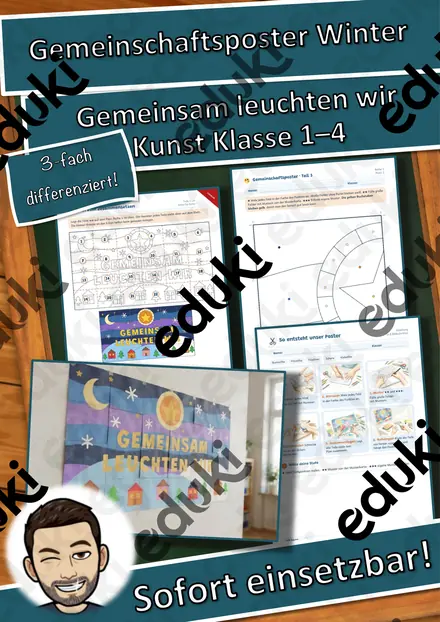
Gemeinschaftsposter Winter „Gemeinsam leuchten wir“ – Klassenposter aus 24 Teilen, 3-fach differenziert (Klasse 1–4)
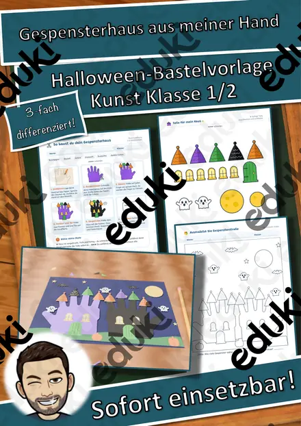
Gespensterhaus aus meiner Hand – Halloween-Bastelvorlage mit Lesen und Schreiben, 3-fach differenziert (Klasse 1/2)

Erster Schultag - Schultasche

3D-Anhänger Herbst – Oktaeder, Diamant und Kugel zum Ausmalen und Basteln, 3-fach differenziert (Klasse 3/4)

3D-Anhänger Winter – Oktaeder, Diamant und Kugel zum Ausmalen und Basteln, 3-fach differenziert (Klasse 3/4)

3D-Anhänger Advent – Oktaeder, Diamant und Kugel zum Ausmalen und Basteln, 3-fach differenziert (Klasse 3/4)

Muttertag, Vatertag - Homeschooling

Regenbogenflagge zum Ausmalen und Basteln

Kunst Mandalas Mandala, Vertretung

Technisches Zeichnen: Lerntheke zur Kabinettprojektion: 01 Würfel und Quader Zeichnen - Übungsaufgaben inkl. Lösung
Kostenloses Material Wirtschaft

Steckbrief Ausbildungsberuf Kaufmann/frau - Groß- und Außenhandelsmanagement

Steckbrief Ausbildungsberuf Medizinische/r Fachangestellte/r

Steckbrief Ausbildungsberuf Verwaltungsfachangestellte/r
Unternehmensziele und Kennzahlen – mit Lernvideos, Übungsseite und Probe-Kurzarbeit (Berufsschule)
Rechtsformen der Unternehmung – mit Lernvideos, Übungsseite und Probe-Kurzarbeit (Berufsschule)
AGB und Verbraucherschutz – mit Lernvideos, Übungsseite und Probe-Kurzarbeit (Berufsschule)
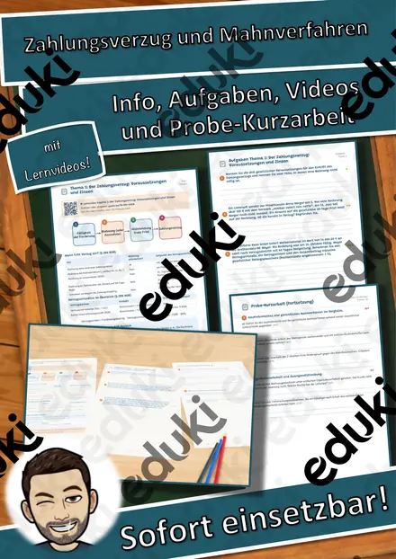
Zahlungsverzug und Mahnverfahren – mit Lernvideos, Übungsseite und Probe-Kurzarbeit (Berufsschule)
Mangelhafte Lieferung und Gewährleistung – mit Lernvideos, Übungsseite und Probe-Kurzarbeit (Berufsschule)
Vertragsarten im Überblick – mit Lernvideos, Übungsseite und Probe-Kurzarbeit (Berufsschule)
Rechts- und Geschäftsfähigkeit – mit Lernvideos, Übungsseite und Probe-Kurzarbeit (Berufsschule)
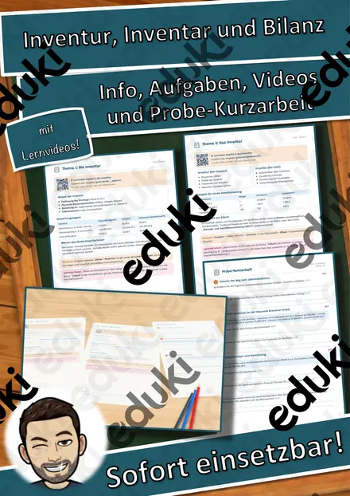
Inventur, Inventar und Bilanz – mit Lernvideos, Übungsseite und Probe-Kurzarbeit (Berufsschule)
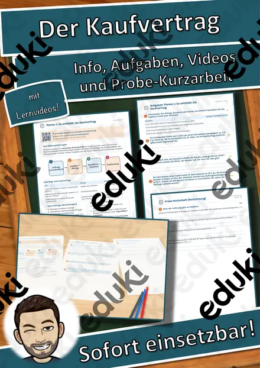
Der Kaufvertrag – Zustandekommen, Pflichten und Kaufvertragsstörungen mit Lernvideos und Probe-Kurzarbeit (Berufsschule)
Lager und Kommissionierung – Lagerfunktionen, Lagerarten und Kommissionierung mit Probe-Kurzarbeit (Berufsschule)
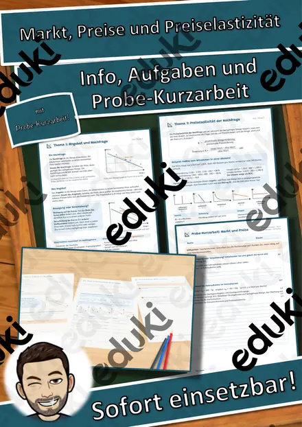
Markt, Preise und Preiselastizität – Angebot, Nachfrage, Gleichgewicht und Elastizität mit Probe-Kurzarbeit (Berufsschule)
Kostenloses Material Mathematik
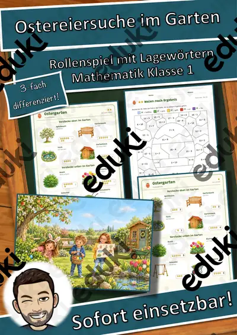
Ostereiersuche im Garten – Rollenspiel Lagewörter und Zählen bis 20, 3-fach differenziert (Klasse 1)
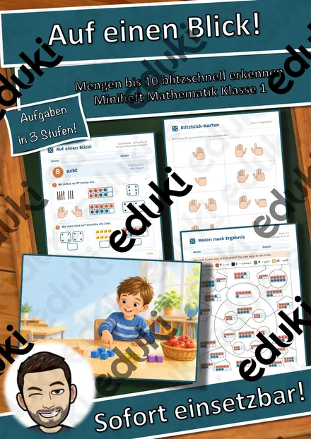
Auf einen Blick! Mengen bis 10 blitzschnell erkennen – Miniheft Mathematik Klasse 1
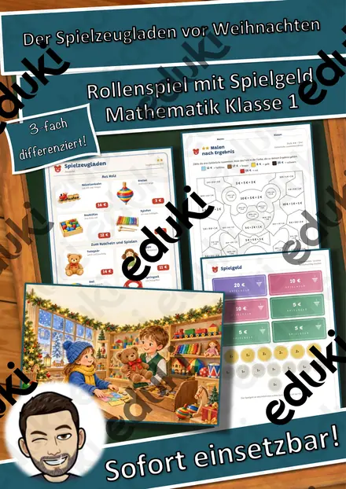
Der Spielzeugladen vor Weihnachten – Rollenspiel Münzen und Scheine bis 20 €, 3-fach differenziert (Klasse 1)
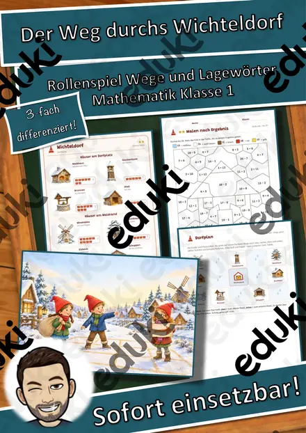
Der Weg durchs Wichteldorf – Rollenspiel Wege, Lagewörter und Schritte zählen, 3-fach differenziert (Klasse 1)
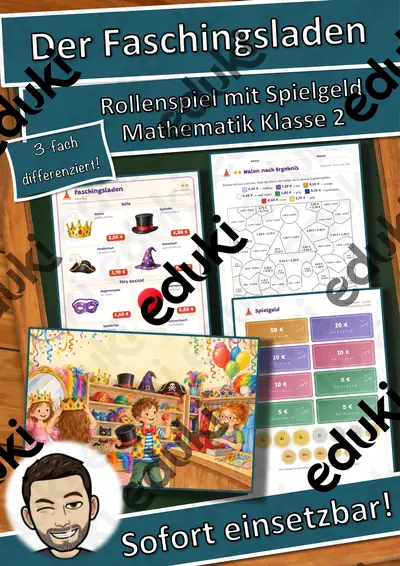
Der Faschingsladen – Rollenspiel Kombinatorik und Rechnen mit Geld, 3-fach differenziert (Klasse 2)
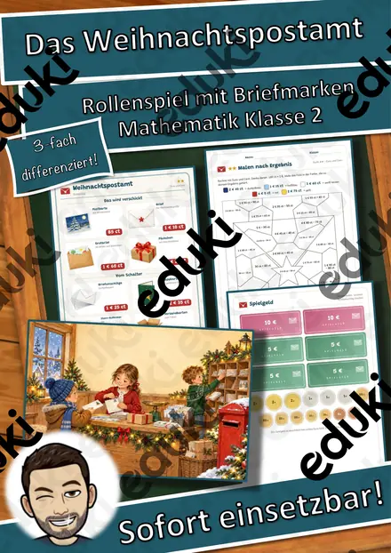
Das Weihnachtspostamt – Rollenspiel Rechnen mit Euro und Cent, gemischte Schreibweise, 3-fach differenziert (Klasse 2)
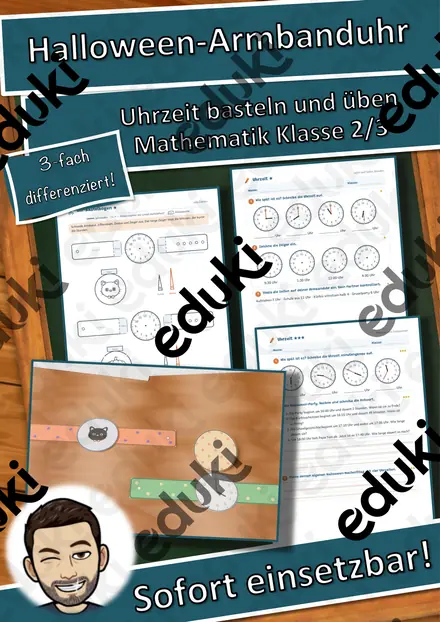
Halloween-Armbanduhr aus Papier – Uhrzeit lernen mit Bastelvorlage, 3-fach differenziert (Klasse 2/3)
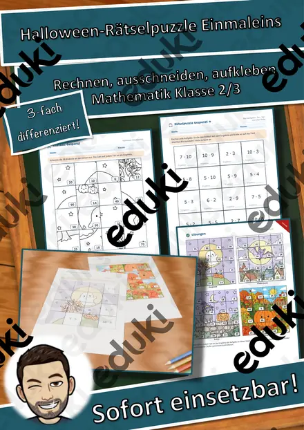
Halloween-Rätselpuzzle Einmaleins – Gespenst, Fledermaus, Katze und Kürbis, 3-fach differenziert mit Selbstkontrolle (Klasse 2/3)
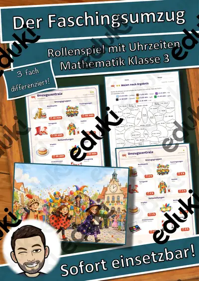
Der Faschingsumzug – Rollenspiel Zeitspannen und Fahrplan, Anfang und Ende berechnen, 3-fach differenziert (Klasse 3)
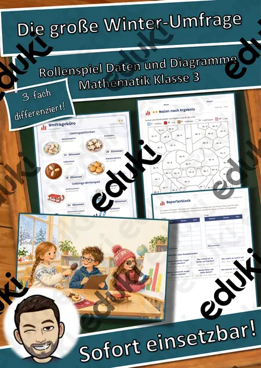
Die große Winter-Umfrage – Rollenspiel Daten, Tabellen und Säulendiagramme, 3-fach differenziert (Klasse 3)
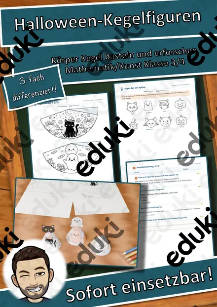
Halloween-Kegelfiguren – Körper Kegel basteln und erforschen, 3-fach differenziert (Mathematik/Kunst Klasse 3/4)

Einmaleins Windmühlen (auch Homeschooling) kleines Einmaleins

Kleines Einmaleins - Einmaleinstabelle - Einmaleins

Das Reisebüro: Winterreise in die Berge – Rollenspiel Maßstab, Kilometer und Meter, 3-fach differenziert (Klasse 4)
Kostenloses Material Fachübergreifendes

Erster Schultag - Schulanfang

Labyrinth: Biene zu Honig - ein Spiel auch für Zuhause

Glückwünsche zum Geburtstag

Magische Worte Tafelmaterial

Reflexion: Lernbarometer, Stimmungsbarometer

Ausmalbild - Mein Lieblingseis (Sommerferien) - Eis zum Ausmalen

Teströhrchenhalter - Coronatest

Motivationskärtchen Viel Erfolg (A6)

Valentinstag Weitermalbilder

Hintergründe Wasserfarbe (Aquarell Hintergründe)

Etiketten als Cliparts

Sprechblasen zur Reflexion oder für eigene Arbeitsblätter (Cliparts Design)
Kostenloses Material Biologie


Kostenloses Material Sachunterricht

Gemüse - Merk es dir!

Halloween Wackel-Skelett – Bastelvorlage, Sachtext Skelett und Knochen beschriften, 3-fach differenziert (Klasse 3/4)
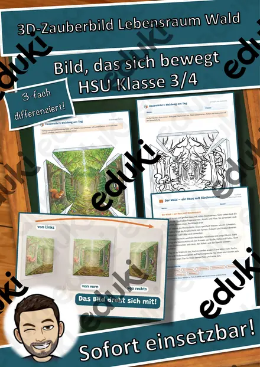
3D-Zauberbild Lebensraum Wald – Umkehrperspektive basteln, Sachtext und Forscherauftrag, 3-fach differenziert (Klasse 3/4)

Frühblüher Materialpaket - Frühblüher
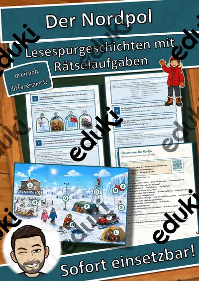
Der Nordpol – Lesespurgeschichte mit Rätselaufgaben (Klasse 4)
Kostenloses Material DaZ/DaF
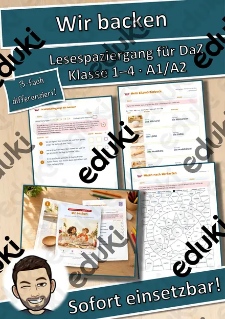
Lesespaziergang DaZ: Wir backen – Wortschatz mit Rätseln, 3-fach differenziert (Klasse 1–4)
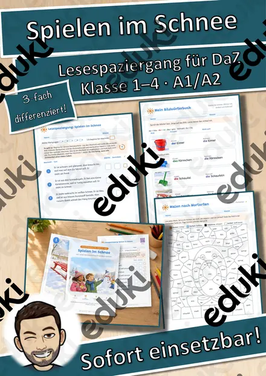
Lesespaziergang DaZ: Spielen im Schnee – Wortschatz mit Rätseln, 3-fach differenziert (Klasse 1–4)
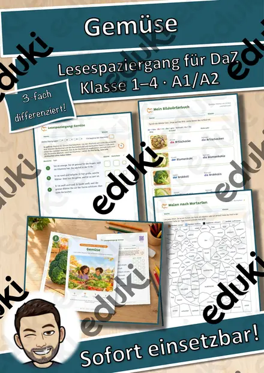
Lesespaziergang DaZ: Gemüse – Wortschatz mit Rätseln, 3-fach differenziert (Klasse 1–4)
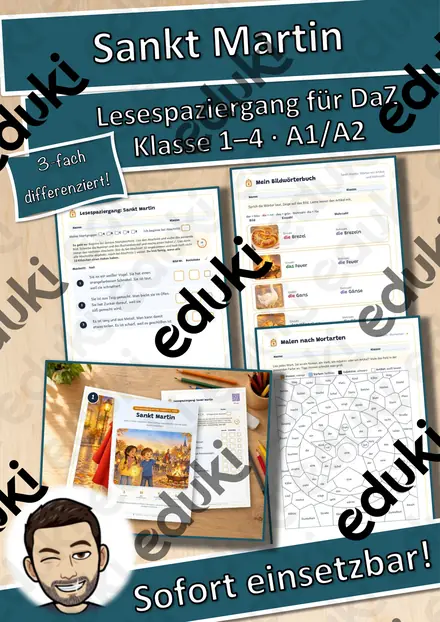
Lesespaziergang DaZ: Sankt Martin – Wortschatz mit Rätseln, 3-fach differenziert (Klasse 1–4)
Kostenloses Material Geschichte


Kostenloses Material Arbeitslehre


Kostenloses Material Physik
Kostenloses Material Digitale Bildung

Kostenloses Material Religion
Kostenloses Material Ethik & Werte und Normen

Kostenloses Material Erdkunde

Kostenloses Material Technik

Kostenlose Arbeitsblätter mit Lösungen
Alle Materialien auf dieser Seite sind fertige PDFs zum Ausdrucken, die du ohne Vorbereitung im Unterricht einsetzen kannst – für die Grundschule genauso wie für die Sekundarstufe. Weitere Materialien findest du in der Materialsuche, bei den Lesespurgeschichten oder nach Saison, z. B. Herbst und Advent & Winter.
Häufige Fragen
Sind die Materialien wirklich kostenlos?
Ja. Auf dieser Seite stehen nur Materialien, die bei der täglichen Aktualisierung auf eduki 0 € kosten. Ändert sich das, verschwindet das Material automatisch von dieser Seite.
Wie lade ich ein Material herunter?
Klick auf das Material: Auf der Detailseite führt dich der Button direkt zum Material auf eduki. Dort startest du den Download.
Sind Lösungen dabei?
Die meisten Materialien enthalten eine Musterlösung. Was genau enthalten ist, steht in der Beschreibung des jeweiligen Materials.
Für welche Klassen gibt es kostenloses Material?
Die Übersicht ist nach Fach gruppiert und innerhalb des Fachs nach Klasse sortiert. Über die Klassen-Filter oben siehst du nur das Material deiner Klassenstufe.